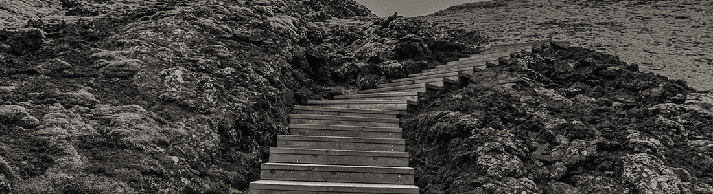

Mon parcours professionnel
Mon parcours professionnel est plutôt atypique puisque je commence par l'artisanat. J'exerce en tant que pâtissière pendant 7 ans. Je grandi en même temps que l'entreprise où je fait mon apprentissage, et je deviens le bras droit de mon employeur. J'y apprend entres autres, le travail d'équipe, la responsabilité et la rigueur.
Avec l'ambition d'ouvrir une boulangerie pâtisserie, nous nous installons en Irlande avec mon compagnon, en 2017. Après plusieurs contrats à travers l'Irlande, nous entamons les démarches pour créer notre entreprise. Malheureusement, notre projet ne se concrétise pas.
De retour en France en 2019, je décide de me réorienter. Après une vaste recherche, je m'attarde sur le secteur du Web. Je saisis l'opportunité de créer un site pour l'association ForéBio puis je suis les cours OpenClassRooms.
Un stage chez Attractive Entreprise me permet de définir mon projet d'orientation. J'entame une formation Web Design (niveau bac+2) dans le but de poursuivre mon parcours professionnel en tant que Chef de Projet digital.